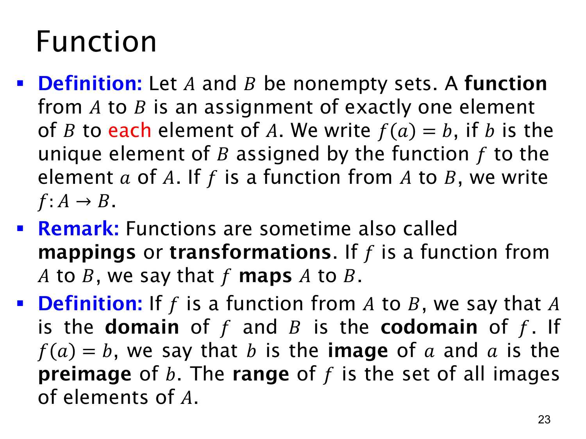

L1.4 · 第 23 页讲解原文
查看这一页课件

函数：每个输入恰好一个输出
本页正式定义函数（function）。给定非空集合 A,B，函数 f:A→B 对 A 中的每一个元素 a，都指定 B 中恰好一个元素 b，写作 f(a)=b。课件也把函数称为映射（mapping）或变换（transformation）。
“每一个”要求没有遗漏输入；“恰好一个”要求同一输入不能得到两个不同输出。但不同输入可以得到相同输出。例如 A={1,2}、B={x,y}，指定 f(1)=x、f(2)=x 仍是函数；B 的元素 y 没被用到也没有问题。相反，若同时指定 f(1)=x 和 f(1)=y 且 x=y，就不满足函数定义。
本页还区分几个名称：
- 定义域（domain）是输入集合 A。
- 陪域（codomain）是声明输出所落入的集合 B。
- 若 f(a)=b，b 是 a 的像（image），a 是 b 的一个原像（preimage）。一个输出可能有多个原像，也可能没有原像。
- 值域（range）是实际取得的所有输出，记为 f(A)={f(a)∣a∈A}。因此 f(A)⊆B，但未必等于 B。
以上述 f(1)=f(2)=x 为例，定义域是 {1,2}，陪域是 {x,y}，值域只有 {x}。区分陪域与值域，是后面判断函数是否“满射”的关键。